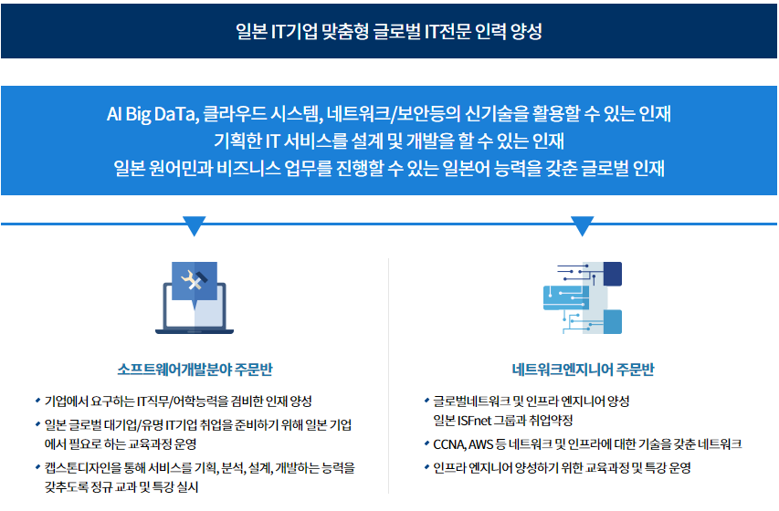
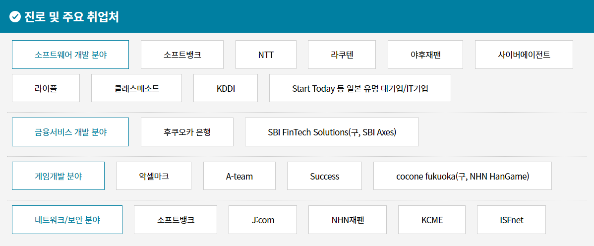

일본 IT반 소개

주요 취업처

학과 주요 성과 및 비전
-
일본IT기업 취업프로그램 취업성과
- 14년간, 총477명! 8년 연속 100% 취업! ('12~'19년) -
주요 취업처
- 소프트뱅크 30명, 라쿠텐 15명, NHN재팬 7명, J:Com 7명, E-Store 21명, KCME 9명, 라이플 12명, 테츠진 5명, 젠켄 21명, SPIC 9명, Success 10명, ClassMethod 7명, UI2 9명, 악셀마크 7명, ISFnet 54명등 -
학과재학생 혜택
- 일본 현지학기제 후쿠오카 어학연수(4주), 일본기업 대표 방문 기업 설명회 및 특강 실시, 일대일 개인 면접 컨설팅, 일본기업 초청 교내 일본 취업박람회 개최, 도쿄 현지 면접연수(3주), 정부지원 청해진대학사업(K-MOVE스쿨과정) 참여, ISFnet 기업장학금(년 2,000만원이상), 후배사랑 장학금 등 혜택